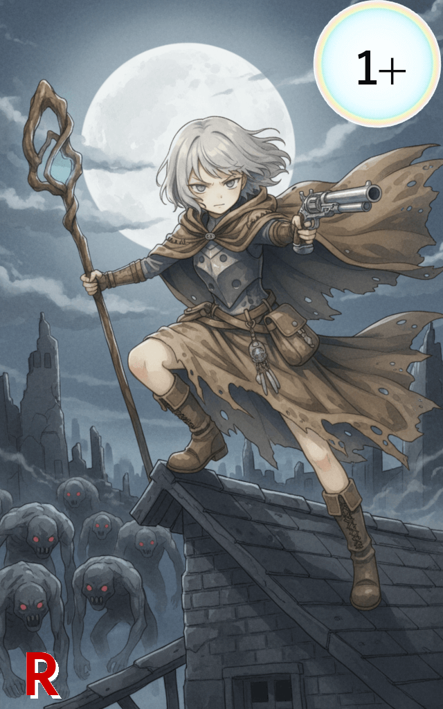

014_シルバー・バレット

レアリティ: レア (R)
シルバー・バレット
クラス: ニュートラル
コスト:1+
タイミング:好きなタイミング
効果:
【加重加重： 同ターンに同名カードを発動する度に、そのコストがxの値分増加します。
このコスト増加の値は、ターン終了時（エンドフェイズ）にリセットされます。:1】
山札からカードを2枚めくり、その内の1枚を手札に加える。
その後、アルカステラ1体に1d6+3点のダメージを与える。
※山札がなく、カードがめくれない場合はデッキの再構築デッキの再構築：セメタリーのカードをシャッフルしてデッキに戻す。
その後、プレイヤーはアストラルコードの使用権を得る。を行う。
【加重加重： 同ターンに同名カードを発動する度に、そのコストがxの値分増加します。
このコスト増加の値は、ターン終了時（エンドフェイズ）にリセットされます。:1】
山札からカードを2枚めくり、その内の1枚を手札に加える。
その後、アルカステラ1体に1d6+3点のダメージを与える。
※山札がなく、カードがめくれない場合はデッキの再構築デッキの再構築：セメタリーのカードをシャッフルしてデッキに戻す。
その後、プレイヤーはアストラルコードの使用権を得る。を行う。
「杖は道を照らすため。
…そしてこの銃は、道を阻む“何か”を排除するための切り札よ。」